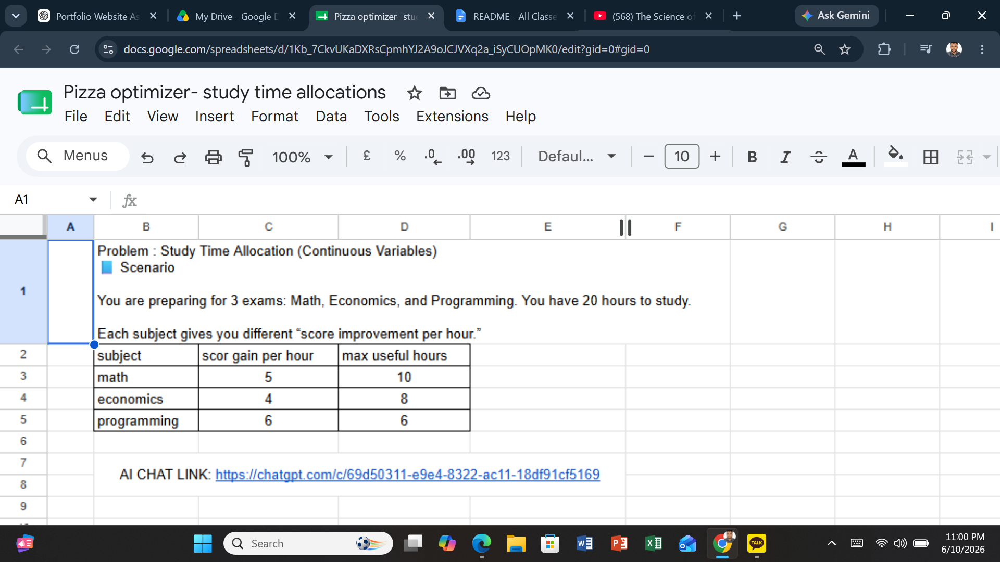

Project Overview
This activity introduced the core concepts of optimization in Management Science. I created a mathematical model to determine how limited study time should be allocated among multiple subjects in order to maximize total score improvement. The problem required identifying decision variables, defining an objective function, and applying constraints that limited the available resources.
- Optimization Modeling
- Decision Variables
- Objective Functions
- Constraints
- Resource Allocation
Evidence

The activity required building a spreadsheet model that allocated study hours across different subjects while respecting time limitations. The optimization model calculated the best combination of hours that maximized the overall score improvement.
The Optimization Model
The model included three main components:
- Decision Variables: Hours assigned to Math, Economics, and Programming.
- Objective Function: Maximize the total score gained from study time.
- Constraints: Total available study time could not exceed 20 hours, and each subject had a maximum useful study limit.
By testing different allocations, the model identified the optimal solution that generated the highest total score while satisfying all constraints.
What Did I Learn?
Before completing this activity, I thought decision-making was mostly based on intuition. However, I learned that mathematical models can help identify better solutions by evaluating multiple possibilities and measuring outcomes objectively. Optimization allows managers to make efficient use of limited resources and improve decision quality.
Real-World Applications
- Budget allocation in businesses
- Production planning and scheduling
- Supply chain resource management
- Workforce and staffing decisions
- Transportation and logistics optimization
- Investment portfolio management
These optimization techniques are widely used by managers to maximize performance while working within real-world limitations such as time, money, labor, and materials.